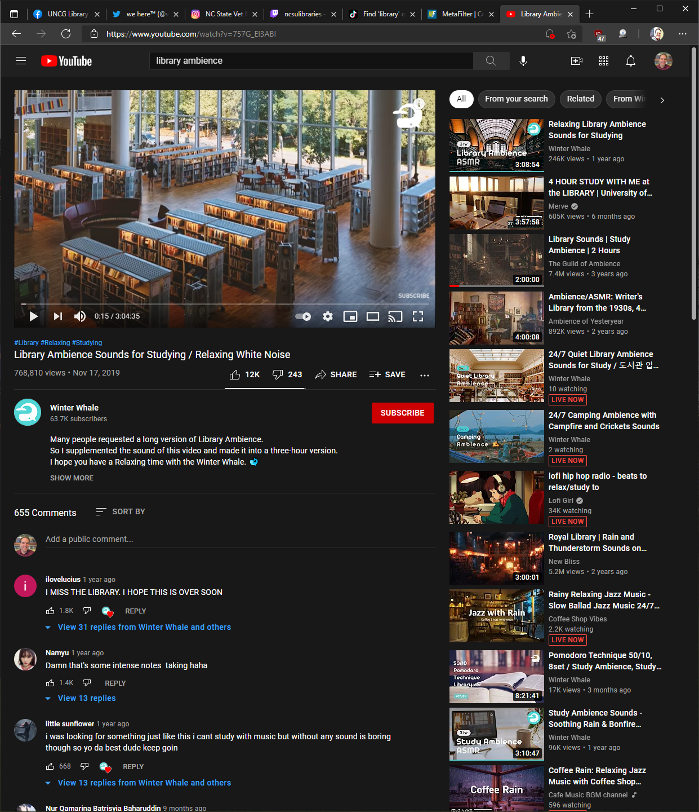

YouTube
Overview
One of the world’s dominant websites, exploding in growth since its founding in 2005, YouTube puts the “media” in social media. With the backing of Google, who purchased the site in 2006, YouTube has grown into an Internet juggernaut, shaping the larger discourse in big ways - the site’s algorithm has been implicated in radicalizing the far right and white supremacists - and small - parents all over the world know about Baby Shark because of the site’s influence over children.
Strengths & Weaknesses
YouTube’s popularity is a huge strength, but its effectiveness as a virtual community is not in line with that level of popularity. Certainly individual creators and “channels” have robust communities of their fans, but there is not a single unified community, and users' connections with each other are minimal.
Recommendations
Libraries would be remiss in not taking advantage of the free media server that YouTube offers. Hosting and streaming video can be both expensive and technologically demanding, and it is incredibly helpful to have YouTube handle that for you. It’s relatively easy to embed YouTube videos on other platforms and websites. YouTube is probably not going to be a core element of your library’s virtual community, but it can be a useful resource.
What can we learn?
YouTube is proof of the power of video. Entertaining and informative, libraries can and should put some resources toward producing video content. This can be recordings of workshops or events, or instructional content like tutorials and training videos. Open source video editing suites like OpenShot allow libraries to produce professional-looking videos with little cost.